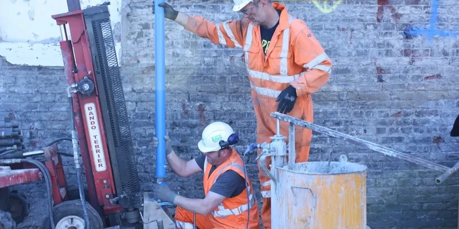

Baton Rouge’s unique geology—from Mississippi River alluvial deposits to Pleistocene terraces—demands geotechnical expertise that understands local ground behavior. Our firm provides comprehensive subsurface investigation, site characterization, foundation design, and construction monitoring across the capital region. We work closely with developers, engineers, and public agencies to deliver code-compliant solutions that address settlement, liquefaction, and groundwater challenges. Whether for shallow or deep foundations, we combine calibrated equipment with proven analytical methods to support safe, efficient projects. Explore how our soil mechanics study and settlement analysis services can guide your next development in Baton Rouge.

Method and coverage
Regional considerations
With consolidated regional experience across the Mississippi Valley, our team brings deep knowledge of Baton Rouge’s subsurface conditions—from the Prairie Terrace to the alluvial lowlands. We operate a calibrated in-house laboratory for index and strength testing, ensuring data reliability. Our engineers stay current with local code amendments and coordinate routinely with permit reviewers and contractors to streamline project delivery. This combination of local insight, rigorous testing, and collaborative approach allows us to deliver practical, defensible geotechnical recommendations for every project scale.
Process video
Standards that apply
All geotechnical work in Baton Rouge follows U.S. standards, including ASTM D1586 for standard penetration testing, ASTM D2487 for soil classification, and ASTM D4318 for Atterberg limits. Foundation design adheres to ASCE 7-22 for seismic loads and ACI 318 for concrete elements. For slope stability and earth retention, we apply ASCE guidelines and local building codes based on the International Building Code (IBC). Our reports are prepared in accordance with ASTM D420 and D3740, ensuring compliance with Louisiana’s regulatory requirements for permitting and construction.
Quick answers
How does the Baton Rouge Fault affect foundation design?
The Baton Rouge Fault is an active growth fault that can cause gradual differential settlement across a site. Our geotechnical investigation includes detailed fault mapping and subsurface profiling to identify its location and activity level. Foundation designs may require reinforced slabs, deep foundations, or articulation joints to accommodate potential movement. We also coordinate with structural engineers to incorporate these measures into the overall design.
What are typical soil conditions for residential construction in Baton Rouge?
Residential sites often encounter stiff to very stiff clays from the Prairie Terrace, with bearing capacities of 2,000 to 4,000 psf. However, areas near the Mississippi River floodplain may have soft clays and organic soils requiring over-excavation or deep foundations. Shallow groundwater can affect slab-on-grade designs, so we recommend soil testing and moisture management measures.
What building code governs geotechnical design in Baton Rouge?
Baton Rouge follows the Louisiana State Uniform Construction Code, which is based on the International Building Code (IBC) with state amendments. Key standards include ASCE 7-22 for seismic and wind loads, and ASTM methods for soil testing. Local amendments may address specific issues like flood zones and fault proximity. We ensure all reports meet these requirements for permit approval.
Do I need a geotechnical report for a small commercial project in Baton Rouge?
Yes, most commercial projects in Baton Rouge require a geotechnical report for building permits. Even small structures benefit from site-specific testing to avoid costly issues like differential settlement or foundation failure. Our report provides recommendations for foundation type, bearing capacity, and groundwater management, helping you design efficiently and meet code requirements.